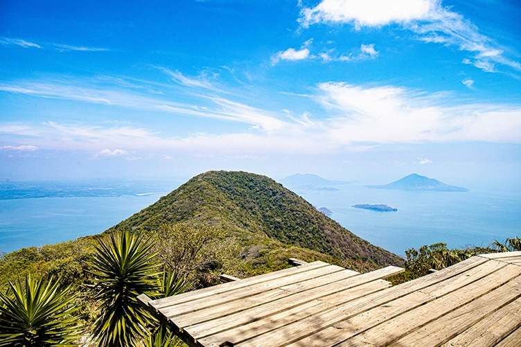

Zona costera compartida con países vecinos, caracterizada por sus islas y paisajes marinos.
Es ideal para paseos en lancha y turismo de naturaleza.

Conchagua
Municipio cercano al volcán de Conchagua, desde donde se obtienen vistas panorámicas del golfo.
Es un punto estratégico para la observación del paisaje costero.